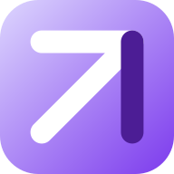

🎸
Idées
Chevalet recollé, cordes neuves. Elle sonne mieux qu'à l'achat.

Tu aimes la publication de Léa. pour voir ses prochaines créations.

PASSIOGardées sur cet appareil ·
Tout ce que tu aimes, au même endroit. Regarde librement : un compte ne sera demandé qu'au moment d'agir.
Tes passions et tes envies (encadrées) s'additionnent pour composer ce que tu vois.
Choisis quelques sujets. Tu pourras tout modifier ensuite.
Tes passions et tes préférences seront conservées. Tu reviendras ici, sur la publication de Léa.
Un compte te donne un profil public, la possibilité de suivre des passionnés, de publier et de rejoindre des activités. Les passions choisies sur cet appareil seront gardées.
Deux informations, et c'est fini.
Il a été envoyé à camille.audit@exemple.fr. Regarde aussi dans les spams. Le lien te ramènera sur la publication de Léa.